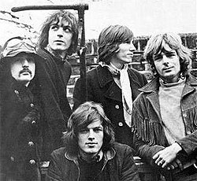

I don't have a favourite band so I just googled one
Pink Floyd were an English rock band formed in London in 1965 gaining a following as a psychedelic rock group, they were distinguished for their extended compositions, sonic experimentation, philosophical lyrics and elaborate live shows, and became a leading band of the progressive rock genre. They are one of the most commercially successful and influential bands in popular music history.
Nicholas Berkeley Mason, born on 27th of January 1944. Is an English drummer, best known as a founding member of the progressive rock band Pink Floyd.
George Roger Waters, born on 6th of September 1943. Is an English songwriter, singer, bassist, and composer. In 1965, he co-founded the progressive rock band Pink Floyd. Waters initially served solely as the bassist, but following the departure of singer-songwriter Syd Barrett in 1968, he also became their lyricist, co-lead vocalist, and conceptual leader.
Richard William Wright born on 28th July 1943. Was an English musician, composer, singer, and songwriter. He was a founding member, keyboardist, and vocalist of the progressive rock band Pink Floyd

Roger Keith "Syd" Barrett born on 6th January 1946. Was an English singer, songwriter, and musician who co-founded the rock band Pink Floyd in 1965. Characterised for his English-accented singing and free-form writing style
Pink Floyd has released 14 Albums and 217 songs some of their most fmaous songs include